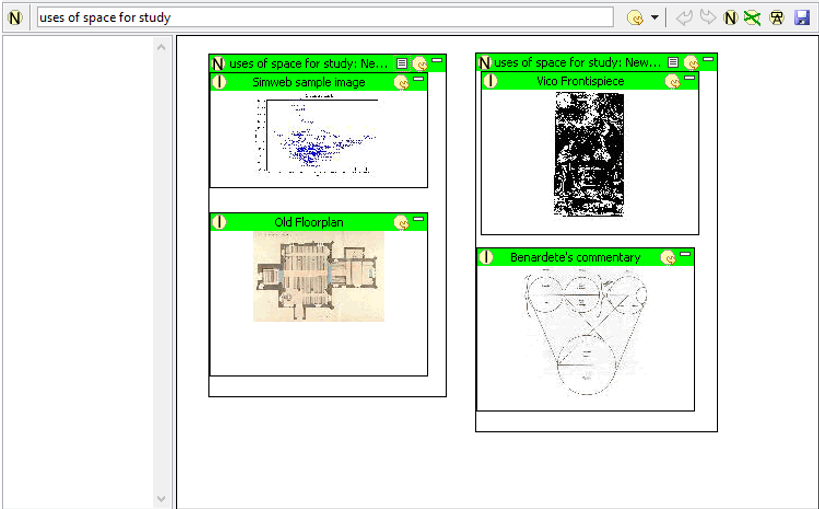
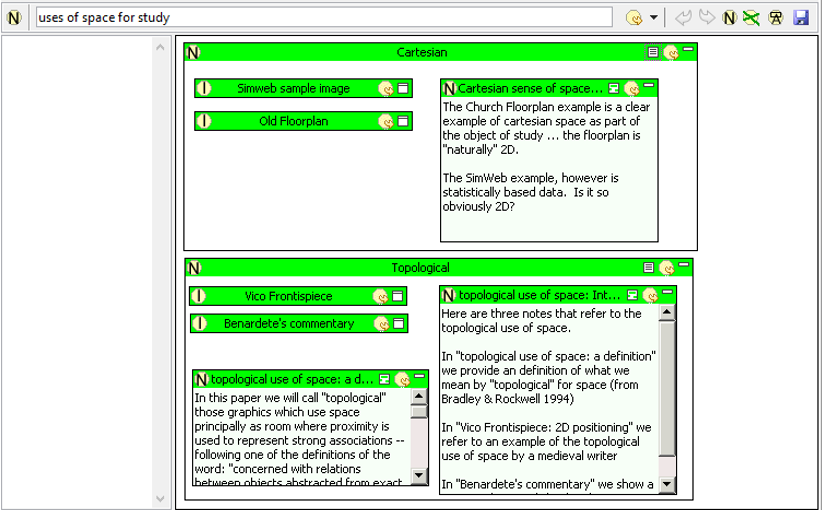

|
|
In this tutorial we will examine how one can begin to use Pliny's 2D reference space to organise notes you have made about materials you have been reading. In this tutorial we take as an example what could be done to assist us in developing a representation of some of the issues that we discover while we are doing a study on the role of 2D space to support scholarly study, but of course could be applied to a broad range of other areas of interest.
Before we start we assume that we have already collected a number of
examples of interest to us (described somewhat more fully shortly). Having
already done this, we begin by creating a note where the different uses of
space for study that we have so far observed will be brought together. To
create this new organising note we push the New Note button in the Resource
Explorer ( )as usual, and name the
new note uses of space for study in the New Note wizard:
)as usual, and name the
new note uses of space for study in the New Note wizard:
Note that we also ticked the "Add to Bookmark List" so that our bookmarks will provide an easy way to find this note again in future. At some point in the future when we have begun to organise many of our notes into a set of concepts we are interested we might find that filing them all as bookmarks will become too cumbersome. When that happens perhaps we will wish to create an overall holder for all our conceptual notes to help us organise and keep track of them, and call it something like My Concepts and file that among our bookmarks instead. Then, a note such as our uses of space for study one could be filed within the My Concepts note, and we would be able to then find uses of space for study, and the other concept items we also filed on it there.
Returning now to the development of our uses of space for study note: we will find that after we push the "Finish" button on the New Note wizard, Pliny will create this new note for us and open it for us in the Note Editor so that we can begin work on it immediately. We are going to use this note mainly as a place for organising our materials in its 2D space -- a task suited to the note's reference area, so we move the boundary between the reference area and the note contents well to the left to give more room to the reference area. Pliny will remember where we placed the boundary so that if we close this note and open it later the boundary will appear next time where we left it. The result will be something like this:
In our study we have collected a number of examples of images that show the use of space for scholarly research purposes. One of them is a screen shot of a distribution graph produced from data generated by a statistical method called Correspondence Analysis, and we have already annoted the image to remind us about how we should interpret such a graph:
This is clearly an example of a use of a 2D space for scholarly study, so we switch back to our uses of space for study note by clicking on the tab that is showing to the left of the Simweb sample image tab to return to the note we created a few minutes ago and drag a reference from the Simweb sample image resource showing in the Resource Explorer to the uses of space for study page:
After the reference to the simweb graph is created we can click on its
open icon ( ) to display it more
fully if need be. This will result in something like this:
) to display it more
fully if need be. This will result in something like this:
Now, repeating this operation several times we locate several other images we have already in our Pliny storage that refer to space and scholarly study and drag references of them all to this page, resulting in something like this:
After looking at the four examples we have assembled here for a moment, we notice that they divide into two categories of interest to us:
So, let's group them together in this way. We could create two notes for these two categories called "Cartesian" and "Topological" and provide references to them on our uses of space for study note and then drag the objects into them -- similar to what we did when grouping materials in the Wittig 1978 tutorial (above) to group our annotations into two larger categories. However, let us achieve the same effect more easily by using the context-menu's "group objects" command instead. To do this we select the Simweb and Floorplan references, which belong together in one group, invoke the context menu by then clicking on the other mouse button, and then we choose "Group Objects". If we do this again for the other pair (Vico Frontispiece and Benardete's commentary) the result is:

Now we can change the names to reflect the two categories of uses that interest us. To change the name double-click on each name in turn and type in the new one:
Now, we want to add some commentary to these two ("Cartesian" and "Topological") categories, and to the overall grouping. To do this we decide to minimise all the references to the images, and to reorder the position of the Cartesian and Topological groupings in the reference space so that there is room to put commentary notes in each of them. Then we create the three addition commentary notes to record something we think about our Cartesian and Topological examples:

Next, we note that our thoughts on the uses of space for study relate somehow to visualization. To record this, we now put a reference to a yet empty note called "visualization" in the reference area (this might be thought of here as a conceptual place-holder). Finally we type some text ("Here we contrast...") into the content area for the "uses..." note. By putting some text there for uses of space for study as well as putting objects in the reference area as we have done up to now we allow any user who sees a reference to this uses of space... object -- whether they are seeing the reference area or only the textual "content" -- to see something, and as a consequence be helped to understand what this object is about.
Our new note uses of space for study now contains in itself a 2D representation (and a topological one at that) of some aspects of our thoughts about its subject. Is this 2D representation itself a kind of visualisation? What was the role of the computer in its creation?
One of the interesting things about Pliny is that it allows you to explore your note and reference collection, and to try out ways to organise your items into groups representing interesting concepts. The provision of a 2D space to organise the references allows one to loosely assert relationships between the materials -- relationships that at a later point you might want to identify and name.
 |
| Pliny Help Pages by John Bradley are licensed under a Creative Commons Attribution-Noncommercial-Share Alike 2.0 UK: England & Wales License. |